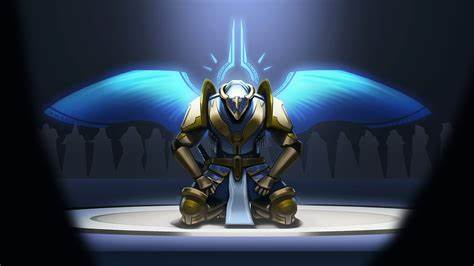
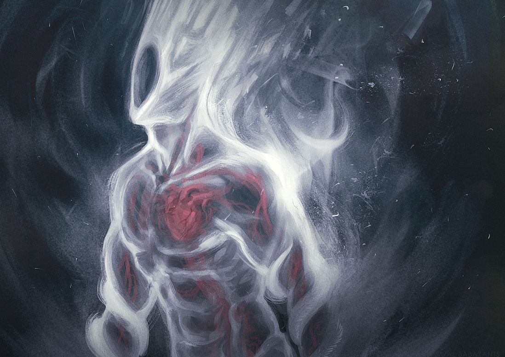
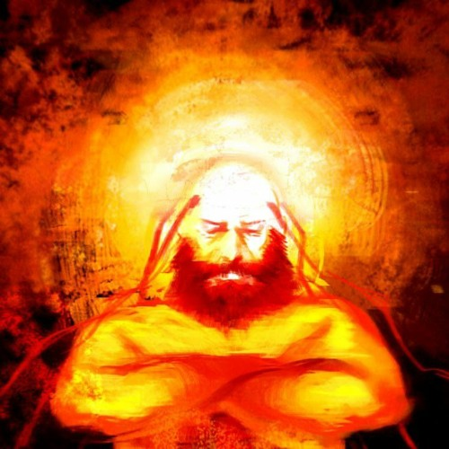
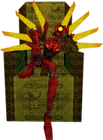
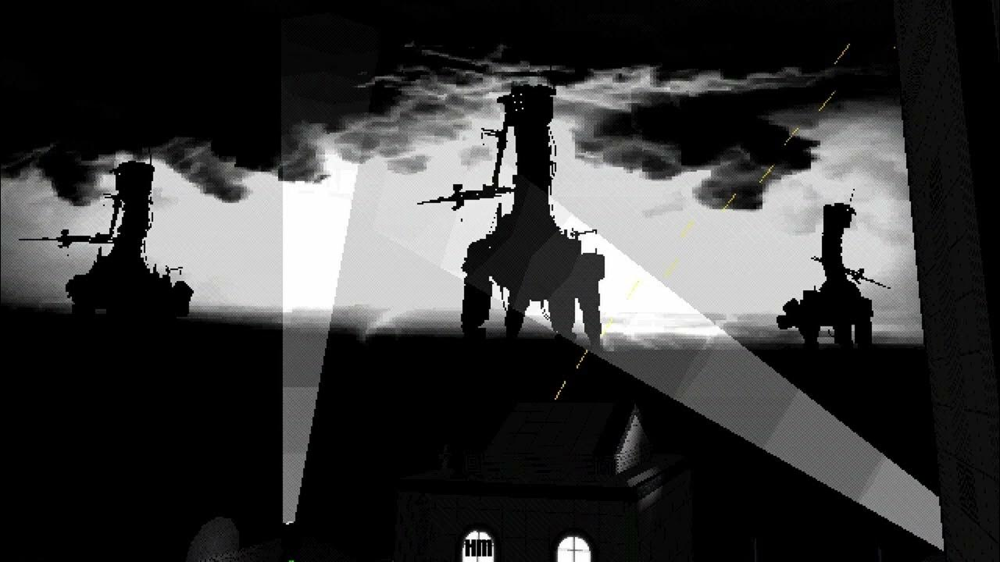

Ultrakill is a fast paced fps game that takes place in hell, You take the role of V1 a robot created during the war to endlessly fight and as your purpose is endless combat you heal and refuel off of blood. in ultrakill earth is plagued with nuclear fallout with man dying out in the final war leaving behind their machines. another very important addition is that GOD IS DEAD and as god is dead the councils of heaven scrambled to keep the citizens as well as gabriel from knowing this horrifying truth.
| Photo | name/title | information | notable quote |
|  gabriel before the light of the lord was stripped from him |
Gabriel, judge of hell/apostate of hate "Supreme Angel" | 1.1)Judge of Hell
As the judge of hell, Gabriel was the top warrior of heaven, but little did he know the lord
He was dead with heaven not knowing until his defeat by v1 which is when his
Unwavering faith in the lord had wavered and the council of heaven had stripped the
Light of the lord from his divine form 1.2)Apostate of Hate As the apostate of hate the light of the lord was already stripped from his form and after His next defeat by the hands of v1 he had truly learned that god was gone and with that. He slaughtered the council of heaven, ending the hierarchy created by god. |
"Machine, turn back now. The layers of this palace are not for your kind. Turn back, or you will be crossing the Will of GOD... Your choice is made. As the righteous hand of the Father, I shall REND YOU APART, and you will become inanimate once more." |
|  Minos Prime |
The Corpse of King Minos"Supreme Husk"/Minos Prime "Prime Soul" | 2.1)corpse of King Minos
King Minos the king of Crete, king of the lust layer, and former judge of hell was
Imprisoned in the flesh prison for his will was too powerful to be destroyed by normal means
So they decided to rip his soul from his body and trapped it within the flesh prison
Prison so after his soul and body were split from each other his body was reduced to a
parasite infested husk 2.2)Minos Prime The soul of King Minos was far too powerful for heaven to destroy so the flesh prison Was created where his divine or PRIME soul was imprisoned, his imprisonment was due To Minos going against the divine will of god and freeing sinners from the punishment Chosen for them by the lord as he had believed that eternal suffering was not worthy For those whose sin was just love. |
"Ah... free at last. O Gabriel... now dawns thy reckoning, and thy gore shall glisten before the temples of man! Creature of steel, my gratitude upon thee for my freedom. But the crimes thy kind have committed against humanity are not forgotten! And thy punishment... is death!" |
|  Sisyphus Prime |
Sisyphus prime "Prime Soul" | Sisyphus was the king of greed, his charisma and drive led his warriors to the Point of utter dependence on him which was alas his downfall. Sisyphus has a prime soul akin to minos but alongisde his penance in the flesh panopticon he had his historically known punishment, For millennia he had been forced by heaven to roll a boulder up a hill until his immense drive to live was reduced to the point of having no motivation to even survive but they had overlooked his true preserverence. | "A visitor... Mmmm... Indeed. I have slept long enough. The kingdom of Heaven has long since forgotten my name, and I am EAGER to make them remember. However, the blood of Minos stains your hands, and I must admit, I'm curious about your skills, Weapon. And so, before I tear down the cities, and crush the armies of Heaven... you, shall do as an appetizer. Come forth, child of man, and DIE." |
|  V2 in Clair de Soleil |
V2 "Supreme Machine" | 2.1)clair de lune
In the clair de lune, v2 wanted to destroy v1 as he saw v1 as competition.
V2 is the second version of v1 which was created during the time of the Great Peace.
So v2 wasn't made for war so instead of v1’s blood fuel v2 had extremely durable
plating Almost double that of v2 in Clair de Lune v2 was provided with the
knuckleblaster a powerful shotgun arm. 2.2)Clair de Soleil In Clair de Soleil v2 had a debt to settle so he met v1 in the dunes of Greed where he Was found sat upon a throne with a new arm as he had lost his knuckle blaster arm He was equipped with the whiplash a powerful arm with the ability to fire out a grappling. hook but sadly in the dunes of greed he met his end to V1 |
he has no quotes :( |
|  1000-THR units |
1000-THR "Earthmover" "Supreme Machine" | The earthmovers were giant behemoths of old earth they were colossal moving cities. Created by man’s avarice and though their original purpose was for immensely heavy Duty tasks they were later repurposed to be the last bastions of mankind after nuclear War plagued the soil and caused the earth as a whole to become completely Inhospitable to life. | they have no quotes :( |